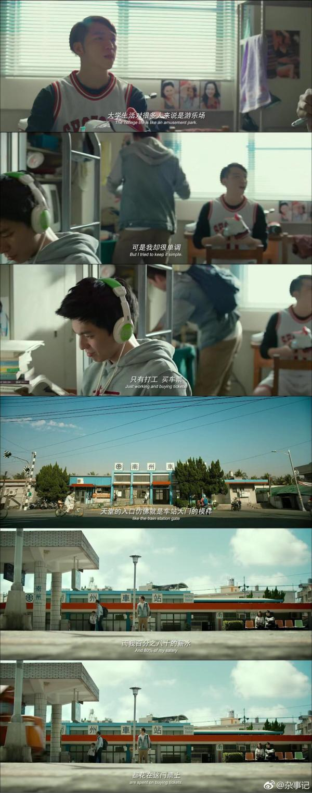
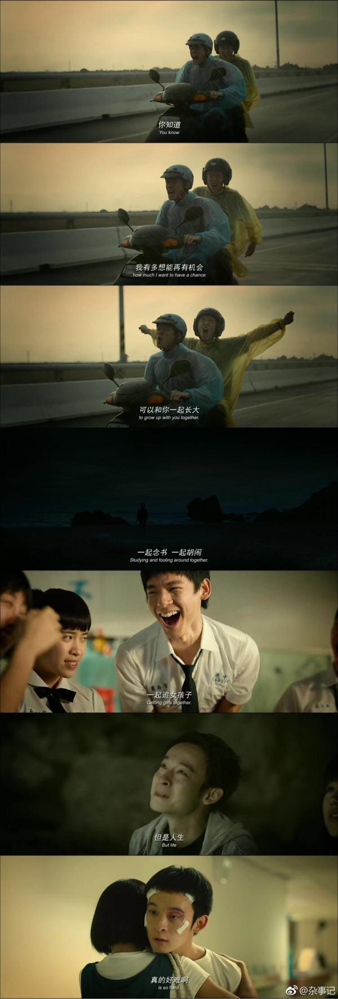

六弄看了两遍，原来它在台湾青春片还是占有一席地位的，我一直以为是很小众的青春片，知道的人不多，相比大多数青春片的虐恋堕胎戏码，六弄还是更贴近现实的，不该说更贴近现实，应该说是更现实的。电影里有亲情、友情、爱情，爱情是最痛心的、亲情是最遗憾的、友情是最感人的。
小绿和心蕊之间一直是不平等的，大学分处两地，小绿拼命打工挣取路费只为了见心蕊一面，小绿为了这份感情丢掉了自己，说他是没长大吗？他只是一直没变。怎样算是长大了？心蕊吗，当她对小绿说出“我们之间有差距”的时候，有那么一会儿我不太喜欢这个女孩，心蕊变了，不是因为她想去西雅图学习、有开一间属于自己的咖啡馆的梦想，而是她开始觉得她和小绿之间是有差距的。差距是什么，是她站在高人一等的角度说出来的，关于咖啡馆，小绿的想法是毕业后两个人回高雄一起经营一家，心蕊的想法是先到西雅图学习以及后面更长的规划，这在心蕊看来，竟然是差距。
其实只是两个人的人生观和价值观不一样而已，不一样所以不能相互理解，但是并没有谁高谁一等。就像之前看到的一个话题，“不想努力，我错了吗？”有的人就是不想努力，生活能够过下去就行；有的人宁愿牺牲健康、感情，追求自己想要的生活。选择不一样罢了，后者也不应该用一种“你这人怎么一点上进心都没有，难道你就打算一直这样吗”的眼光，来看待那些在他们看来不努力的人。
即使知道上了大学，心蕊和自己的生活开始走向两个轨道，他还是尽最大的努力靠近心蕊，就算那天两个人吵了架，回到学校的小绿还是因为心蕊说想要跟他一起去西雅图，而学起了英语。我很心疼小绿，因为他一直在将近固执地拼命守住这份感情。他没有远大的抱负和理想，知道了心蕊想要开咖啡馆，他向往的也是和她一起回高雄，开一家属于他们俩的咖啡馆，他要的东西很简单，却很难。
让这段感情走向破灭的，除了两个人想法上的差别，还有小绿一直以来都不明白心蕊对于这份感情，最想要的其实只是他在身边。被抢劫后，心蕊不需要小绿帮她报警、帮她找回钱包，只是想让小绿待在她身边，但是小绿始终不懂，这可能也是心蕊觉得他没有长大的其中一个原因。

小绿和心蕊分手之后，陷入了颓靡，一直守护的东西没有了，看着小绿躺在宿舍的床上看着自己给心蕊的画像，就像自己这么多年奔跑着追随着的一道光，他在奔跑，它却以更快的速度在渐渐远离，直到突然有一天，它不再为自己照亮了。
对于妈妈的离去，小绿很自责，自责于只顾着学校的事情、心蕊的事情，没能意识到妈妈早就病入膏肓，没能见到妈妈最后一面，小绿本是单身家庭，从小与妈妈相依为命，妈妈于他的意义和他对她的精神依赖都远远超过普通家庭。上了大学，我们好像很容易就忽略了家里人，我们越来越独立，开始塑造起了属于自己的生活，对他们的想念和依赖也越来越少。而经常忘了，家是那个最能包容你的地方。

妈妈和阿智的部分，来日再做梳理。